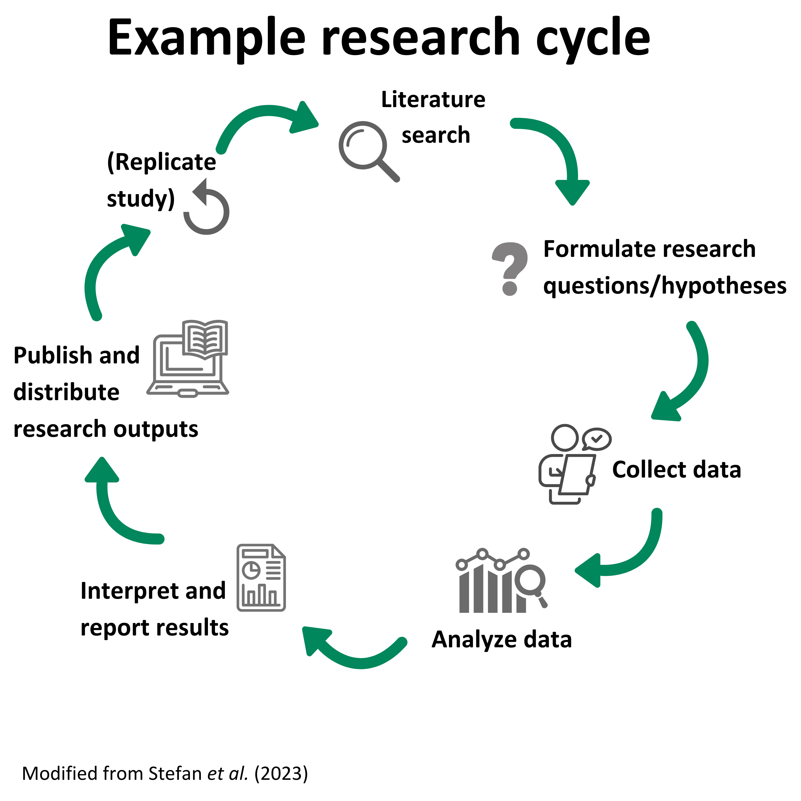
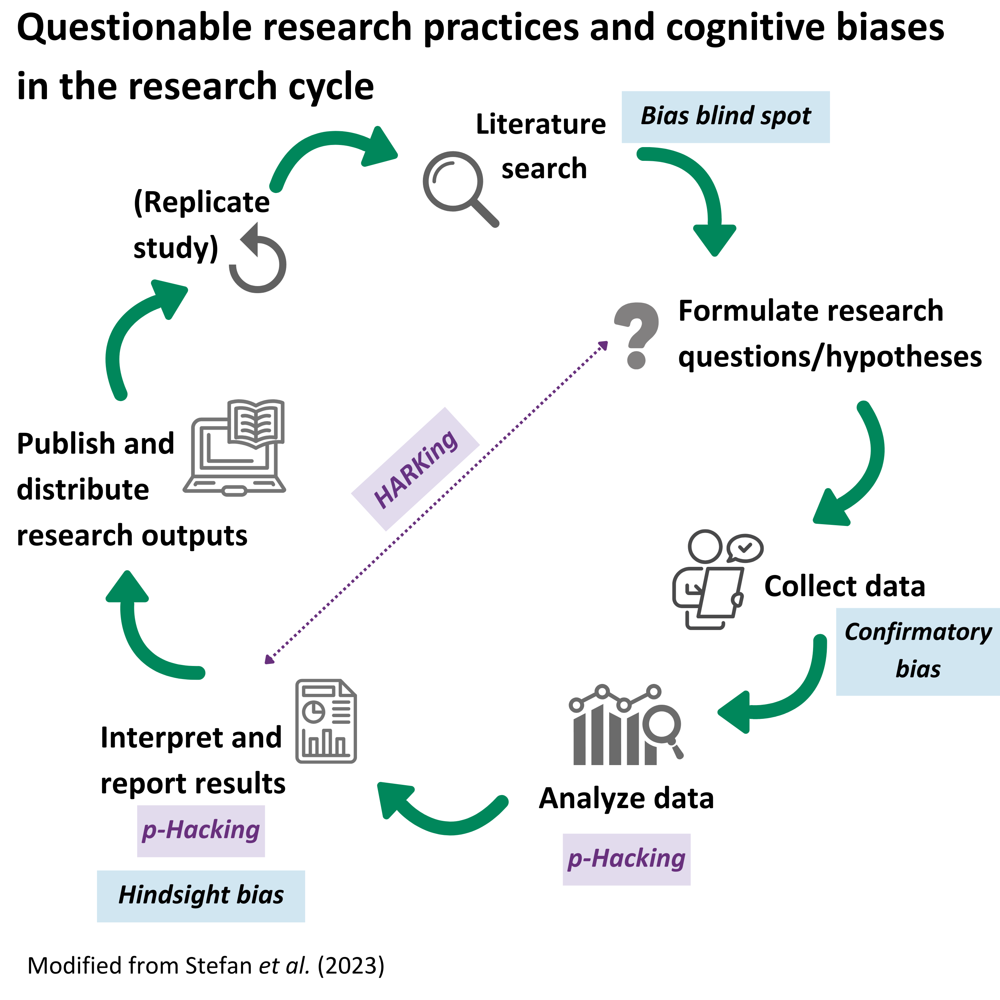
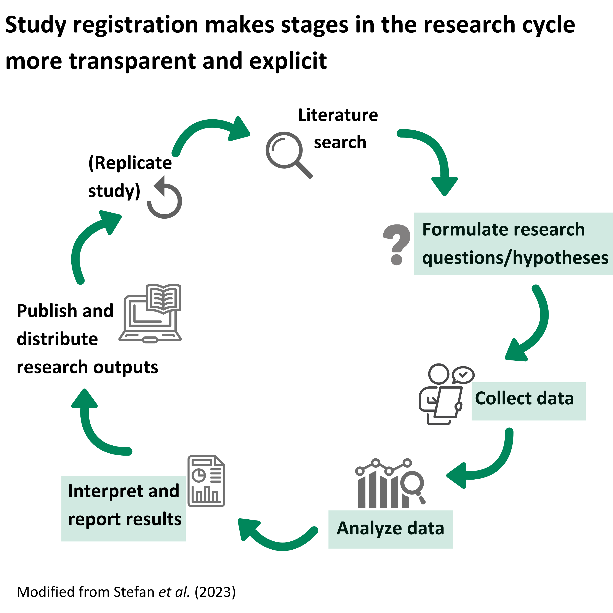
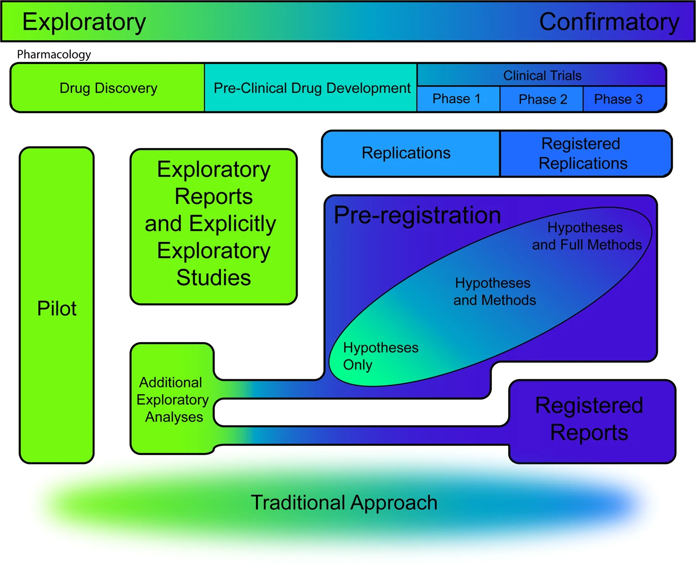
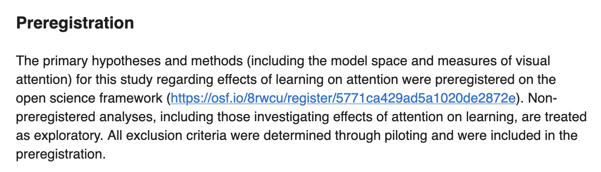
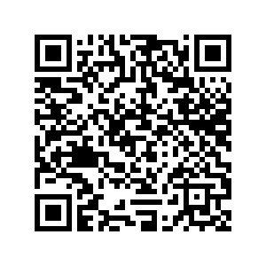
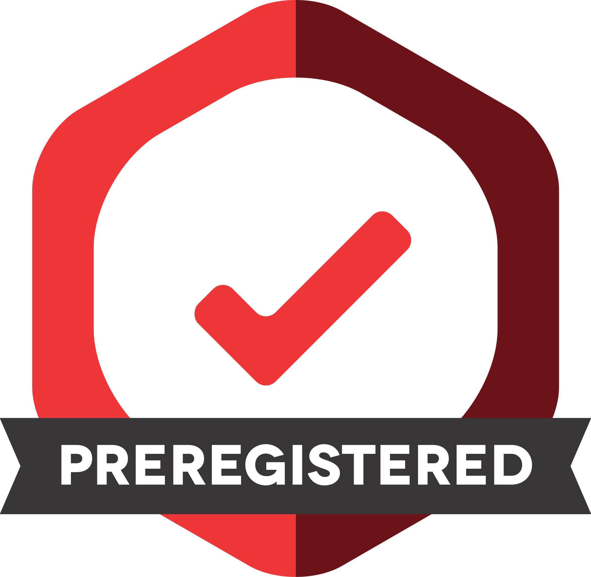

Study registration
Credit statement and licence
Creator: Sara Lil Middleton ( 0000-0001-5307-8029)
0000-0001-5307-8029)
Reviewer: Malika Ihle ( 0000-0002-3242-5981)
0000-0002-3242-5981)
Acknowledgments: Gracia Prum ( orcid), Dejana Damjanovic (
orcid), Dejana Damjanovic ( orcid)
orcid)
This work by Sara Lil Middleton and Malika Ihle is licensed under a CC-BY 4.0 Creative Commons Attribution 4.0 International License.
Speaker Notes:
These are the speaker notes. You will a script for the presenter for every slide. In presentation mode, your audience will not be able to see these speaker notes, they are only visible to the presenter.
Instructor Notes:
There are also instructor notes. For some slides, there will be pedagogical tips, suggestions for activities and troubleshooting tips for issues your audience might run into. You can find these notes underneath the speaker notes.
Prerequisites
Before completing this submodule, please carefully read about the necessary prerequisites.
- Familiarity with the steps in the research life cycle, the different types of variables (independent, dependent and covariates)
Speaker Notes:
Instructor Notes:
Learners require a device with internet access
Your study registration journey
From: “I am not sure what study registration is or why it is important”
To: ““I feel empowered to adopt the principles and practices of study registration”
Speaker Notes:
This journey aims to take you from the what or why is study registration important? to feeling empowered to adopt key principles of study registration
Instructor Notes:
Communicating the overall learning outcomes as a journey helps embed the step by step build up of complexity of the topic (i.e. moving along Bloom’s Taxonomy levels)
Before we start: Results of survey!
Speaker Notes:
Let’s take a look at the results of the short survey that was sent out before class. We will then compare our answers at the end of class.
1. How familiar are you with the practice of study registration?
(1 to 5 scale: 1 = Never heard, 2 = Basic knowledge, but cannot describe in detail, 3 = Some knowledge and can discuss, 4 = Some knowledge, can discuss and relate to with other issues, 5 = Extensive knowledge)
Speaker Notes:
How familiar are you with the practice of study registration? Scale runs from 1 to 5 where 1 = never heard of it and 5 = extensive knowledge.
2. How would you rate your confidence to carry out a registration for your study?
(1 to 5 scale: 1 = Not confident at all, 2 = Slightly confident, 3 = Somewhat confident, 4 = Very confident, 5 = Completely confident)
Speaker Notes:
How would you rate your confidence to carry out a registration for your study? Scale runs from 1 to 5 where: 1 = Not confident at all and 5 = Completely confident)
3. What words come to mind when you think of study registration?
Speaker Notes:
3. What words come to mind when you think of study registration?
Where are we at?
Speaker Notes:
Here are the results from the survey
Instructor Notes:
Briefly examine the answers given to each question interactively with the group on particify
Use visuals from the survey to highlight specific answers.
Make it clear to the group that there will be a similar post-submodule survey to examine understanding and learning progress.
Learning goals
Aim: Examine study registration as an open science practice, its links to addressing questionable research practices and discuss common challenges with doing a study registration.
There are four sections to this submodule:
Section 1: Introduction to study registration
Section 2: How to do a study registration
Section 3: Challenges and opportunities of study registration
Section 4: Wrap up and building a registration toolkit
Speaker Notes:
The over all aim of this submodule is to examine study registration as an open science practice, its links to addressing questionable research practices and discuss common challenges with doing a study registration
There are four sections to this submodule where the first two sections focus on the key context of study registration and practical steps of registering a study and the third section focuses on crowd-sourcing the merit and concerns about study registration and ways to address challenges.
We will end with a wrap up session and think about what next.
Instructor Notes:
Giving the whole overview at the start of the session provides learners with structure and clarity about what to expect.
Section 1: Learning goals and overview
Section 1 is all about learning the key terms and definitions and to get you thinking about the what and the why of study registration.
Activity: Reflection question and quiz
After completing section 1 you should be able to:
- Recognize the context of why registration exists as an open science practice
Speaker Notes:
After completing section 1 you should be able to:
- Recognize the context of why registration exists as an open science practice
The main activity is a self reflection exercise
Section 2: Learning goals and overview
Section 2 is all about learning about the steps involved in a study registration
Activity: “Improve the answer” (own and group work)
After completing section 2 you should be able to:
- Identify the key components of a study registration
- Describe the differences between study registration and registered reports
- Practice improving a component of a study registration
Speaker Notes:
After completing section 2 you should be able to:
- Identify the key components of a study registration
- Describe the differences between study registration and registered reports
- Practice improving a component of a study registration
The main activity is a improving elements of study registration
Section 3: Learning goals and overview
Section 3 is all about addressing some common barriers to study registration
Activity: Perspective mapping and discussion (whole class)
After completing section 3 you should be able to:
- Explain the perceived barriers to doing a study registration
- Identify key benefits of study registration
Speaker Notes:
Activity: Perspective mapping (whole class) After completing
section 3 you should be able to:
- Explain the perceived barriers to doing a study registration
- Identify key benefits of study registration
The main activity is a documenting our perceived pros and cons of study registration
Section 4: Learning goals and overview
Section 4 we will summarize key learnings
Activity: Build up your registration toolkit! (individual work) Optional activity: quiz!
After completing section 4 you should be able to:
- Propose an action that follows the principles of study registration that one can implement
Speaker Notes:
In the final section you should be able to:
- Propose an action that follows the principles of study registration that one can implement
The last activity you will work individually to build up your study registration toolkit!
Section 1: Introduction to registration
Speaker notes:
Let’s start get started with section 1 where will look at the context of why study registrations exist.
Warm up question to get us started!
In your research project, when do you typically think about the type of analysis you use?
- Reflect on the question on your own
- We will share our answers in class
Speaker Notes:
To get us to think about our current ways of working, I would like us think about our current or past research project and reflect on this question: In your research project, when do you typically think about the type of analysis you use?
A. As you collect your data B. After you have collected all your data C. As you plan your study
We will then share our some of our thoughts as a class.
Instructor Notes:
Activity delivery mode: Suitable for in person, online and hybrid teaching formats: Provide learners with a minute to think and then submit their answers anonymously on a pre-prepared Particify poll. Project the results of the question on the board/share screen (if online). Remark on the most popular answer and invite 1 or 2 learners to share their experiences related to the question if they feel comfortable sharing.
Pedagogical add on: This self reflection question invites learners to reflect on their own workflows. It also primes them for the practice of registration being about reframing or front loading research planning in advance of collecting data.
When we think about analyses
Where in the research life cycle we think about analyses influences how we interpret and report our findings
It is also important to think about the type of research approach of your study
Speaker Notes:
Where in the research life cycle we think about analyses influences how we interpret and report our findings
- It is also important to think about the type of research approach of your study
Research cycle stages

Speaker Notes:
Here we have key stages of a research cycle
Starts with a literature search, reviewing the literature on the chosen topic. Then stating research questions and any hypotheses After that comes data collection, analysis and interpretation, before the research findings are reported. Replicating study is also an option.
Approaches to research
There are different ways to do research depending on what information you are trying to gather. Research can be:
- Qualitative (interview study, focus groups, ethnographic)
- Review-based (systematic, narrative)
- Intervention/experimental (randomized control trials, factorial design)
- Observational (case study, natural experiment, longitudinal)
Being able to understand the different research approaches, study designs and key concepts will help provide context for the steps required to do a study registration.
Speaker Notes:
There is no single one way to do research! It all depends on what information you are trying to gather. The research cycle diagram from earlier can look a little different depending on the approach.
Different research approaches include:
- Qualitative for example studies based on interviews, focus groups, ethnographic accounts
- Review-based for example systematic and narrative reviews
- Intervention/experimental such as randomized control trials or factorial design
- Observational for example case studies, natural experiments, longitudinal studies
Qualitative research
Qualitative research approaches focus on examining the meanings, experiences, and perspectives of individuals or groups
Data collection involves primary, first-hand, text-based data that is analyzed using specific interpretive methods.
Speaker Notes:
Qualitative research approaches focus on examining the meanings, experiences, and perspectives of individuals or groups
- Data collection ivolves primary, first-hand, text-based data and analyze it using specific interpretive methods.
Instructor notes:
Instructors should provide examples of different research approaches that their class can relate to.
Review-based research
Review-based research involves collating and synthesizing previously published work on a topic.
These approaches can be used to generate new insights and identify knowledge gaps.
Reviews can be more or less done systematically, with systematic review and meta-analyses having well-established protocols (e.g. PRISMA guidelines)
Speaker notes:
Review-based research involves collating and synthesizing previously published work on a topic.
These approaches can be used to generate new insights and identify knowledge gaps.
Reviews can be more or less done systematically, with systematic review and meta-analyses having well-established protocols (e.g. PRISMA guidelines)
Instructor notes:
Instructors should provide examples of different research approaches that their class can relate to.
Intervention and experimental research
Intervention and experimental research approaches are closely related. They involve deliberate manipulations to a physical entity (e.g. individuals, groups, organisms) intended to measure changes to that entity.
Intervention studies typically focuses on the application of a treatment or action to observe its effect
Experiments involve controlled conditions to test specific hypotheses.
A hypothesis is an unproven statement relating the connection between variables
Speaker notes:
Intervention and experimental research approaches are closely related. They involve deliberate manipulations to a physical entity (e.g. individuals, groups, organisms) intended to measure changes to that entity.
Intervention studies typically focuses on the application of a treatment or action to observe its effect and we may be more familiar with them in the medical field.
Experiments involve controlled conditions to test specific hypotheses.
A hypothesis is an unproven statement relating the connection between variables
Instructor notes:
Instructors should provide examples of different research approaches that their class can relate to.
Observational research
- Observational research gathers information about individuals or populations without manipulating the environment or variables.
- Researchers observe and collect data on subjects as they naturally occur in their usual settings.
Speaker notes:
Observational research gathers information about individuals or populations without manipulating the environment or variables.
Researchers observe and collect data on subjects as they naturally occur in their usual settings.
Instructor notes:
Instructors should provide examples of different research approaches that their class can relate to.
Hypothesis generating vs testing
Hypothesis generating vs testing are two modes of research inquiry that influence study designs and underpin the practice of study registrations
Hypothesis generating:
- exploratory, discovery-focused research (asks questions like: what is happening? Why is it happening, How is it happening?)
Hypothesis testing:
- confirmatory, justification-focused research (asks questions like: what does X do to Y?)
The distinctions between hypothesis generating vs testing research are often not clearly differentiated in practice, which leads to questionable research practices and reduced credibility of research.
Speaker notes:
Hypothesis generating vs testing are two modes of research inquiry that influence study designs and underpin the practice of study registrations
- Hypothesis generating:
- also referred to as exploratory or discovery-focused research (asks questions like: what is happening? Why is it happening, How is it happening?)
- Hypothesis testing:
- also known as confirmatory or justification-focused research (asks questions like: what does X do to Y?)
Questionable research practices (QRPs)
- Questionable research practices (QRPs) are a set of intentional or unintentional behaviors where researchers distort study findings. Examples include p-hacking and HARKing (Parsons et al. 2022)
- HARKing: Hypothesizing after the results are known (HARKing) is a QRP where a researcher changes their hypothesis based on or informed by the results, but present their hypothesis as if it were a priori [@kerr1998].
- p-Hacking: A QRP which describes the many ways researchers can artificially increase the likelihood of obtaining a statistically significant result [@pennington2023].
Speaker notes:
Questionable research practices often shortened to QRPs are a set of intentional or unintentional behaviors where researchers distort study findings. Examples include p-hacking and HARKing
HARKing: Hypothesizing after the results are known (HARKing) is a QRP where a researcher changes their hypothesis based on or informed by the results, but present their hypothesis as if it were a priori.
p-Hacking: A QRP which describes the many ways researchers can artificially increase the likelihood of obtaining a statistically significant result
Researcher biases
There are wide range of cognitive biases (e.g. hindsight bias, confirmatory bias, bias blind spot) that lead to systematic differences in how we perceive information and make decisions.
It highlights that we are all human and it is important to be aware of how cognitive biases influence how we do our research!
- Hindsight bias: The tendency to frame previous decisions or events as more predictable after the outcome is known (“I knew it all along”) [@hardwicke2023].
- Confirmatory bias: The tendency to seek out, interpret, favor and recall information in a way that supports one’s prior values, beliefs, expectations, or hypothesis [@parsons2022].
- Bias blind spot: The lack of awareness of how one’s decisions are shaped by bias [@hardwicke2023].
Speaker notes:
Biases are another big influence on how we perceive information and decision-making during the research process!
Here we outline 3 main ones that are relevant to the topic of study registrations.
- Hindsight bias: The tendency to frame previous decisions or events as more predictable after the outcome is known (“I knew it all along”)
- Confirmatory bias: The tendency to seek out, interpret, favor and recall information in a way that supports one’s prior values, beliefs, expectations, or hypothesis
- Bias blind spot: The lack of awareness of how one’s decisions are shaped by bias
Instructor notes:
Remind learners know that biases are a part of being human and awareness is key!
Credibility

The field of meta-science/research - the science of how science is done has documented many challenges to the credibility of science research (e.g. questionable research practices and biases)
lead to “reproducibility crisis” [@baker2016]
Speaker notes:
The field of meta-science/research - the science of how science is done has documented many challenges to the credibility of science research (e.g. Questionable research practices and biases)
- lead to “reproducibility crisis” - which references the survey of 1500 scientists about attitudes and experiences of reproducibility
Towards study registration
- Study registrations are an open science practice that safe guard researchers from questionable research practices and biases by making decision-making processes more explicit. Study registrations help to:
- differentiate between confirmatory and exploratory analysis
- increase transparency and credibility of research
- It involves uploading a time-stamped, publicly-available record of a research study plan onto a register, which is given a unique and permanent study identifier [@nosek2018; @pennington]
The term study registration is used here instead of “preregistration” which can be ambiguous as it can refer to different practices occurring at various stages of the research life cycle [@mayo-wilson2025].
Speaker Notes:
so far we have outlined how not clearly understanding the differences in research approaches, differentiating between hypothesis generating vs testing can result in questionable research practices and biases.
Study registrations are viewed as a practice to mitigate these issues and help to:
- differentiate between confirmatory and exploratory analysis
- increase transparency and credibility of research
In practice, it involves uploading a time-stamped, publicly-available record of a research study plan onto a register, which is given a unique and permanent study identifier, we will learn more about this in the next section.
An important note is on terminology - you may see in research papers the term “preregistration” used, a recent paper has shown this can be confusing and instead authors advocate for using the term study registration to accommodate for the wide research approaches.
History of study registrations
The concept of study registration is not new! The scientist and philosopher Charles Sanders Peirce in ~1880s created a set of rules to test “the truth”, with one being that hypotheses should be stated before data collection @peirce1883.
One of the earliest formal implementations of registrations comes from medical clinical trials.
More recently, researchers and journals in the field of psychology have rapidly adopted this practice
The percentage of medical study findings reporting a significant benefit for an intervention dropped by ~50% after the year 2000 when the registry for clinical trials - clinicaltrials.gov was launched [@kaplan2015]!
Speaker Notes:
Study registration might seem like a hot topic nowadays but the concept is not new!
The scientist and philosopher Charles Sanders Peirce around 1880s created a set of rules to test “the truth”, with one being that hypotheses should be stated before data collection.
One of the earliest formal implementations of registrations comes from medical clinical trials.
More recently, researchers and journals in the field of psychology have rapidly adopted this practice
Summary of section 1
- The research cycle has distinct stages that can differ depending on research approaches (e.g. qualitative, experimental, observational or review-based)
- Hypothesis generating vs testing research is often not clearly separated, leading to questionable research practices (QRPs) and reduced research credibility.
- Study registration is an open science practice that aims to mitigate QRPs by transparently documenting a research plan
There is no single “right” way to design or analyze/interpret a research study. It is important to be able to recognize your research approach and the steps involved from having an idea to sharing your research findings.
Speaker Notes:
Before we have a short quiz here is the summary of the things we covered in section 1.
- The research cycle has distinct stages that can differ depending on research approaches (e.g. qualitative, experimental, observational or review-based)
- Hypothesis generating vs testing research is often not clearly separated, leading to questionable research practices (QRPs) and reduced research credibility.
- Study registration is an open science practice that aims to mitigate QRPs by transparently documenting a research plan
The take home message is: There is no single “right” way to design or analyze/interpret a research study. It is important to be able to recognize your research approach and the steps involved from having an idea to sharing your research findings.
Section 1 quiz!
Speaker Notes:
This quiz is open book and the four questions will be read out and you will have a few moments to answer. The correct answer will appear after each question. The aim to check understanding of the material we have covered so far, before we move onto section 2.
Instructor Notes:
Activity delivery mode: In person/online (Zoom)/hybrid show questions on screen and have learners submit answers through virtual learning environment which logs their answers (personal computers needed in class for this)
Pedagogical add on: Quiz questions focus on memory recall and incentivizes learner engagement during class
Accessibility tip:
Allow open book for the quiz to assist learners with memory recall challenges
Q1. A researcher wants to study the effect of drought on plant growth by manipulating rainfall levels. This research approach is an example of:
Speaker Notes:
A researcher wants to study the effect of drought on plant growth by manipulating rainfall levels. This research approach is an example of: A. a qualitative study design B. an observational study design C. an experimental study design
A1. A researcher wants to study the effect of drought on plant growth by manipulating rainfall levels. This research approach is an example of:
The answer is C, as the researcher is deliberately manipulating rainfall (an environmental variable) to measure the impact this has on plant growth. This is a key feature of an experimental study design.
Speaker Notes:
The answer is C. an experimental study design, as the researcher is deliberately manipulating rainfall (an environmental variable) to measure the impact this has on plant growth
Q2. HARKing - Hypothesizing after the results are known is a:
Speaker Notes:
Question 2: HARKing - Hypothesizing after the results are known is a
A. cognitive bias B. questionable research practice C. name of a website to report research misconduct
A2. HARKing - Hypothesizing after the results are known is a:
Speaker Notes:
The correct answer is B, HARKing is a questionable research practice.
Q3. The tendency to frame previous decisions or events as more predictable after the outcome is known, is an example of which type of cognitive bias?
Speaker Notes:
Question 3: The tendency to frame previous decisions or events as more predictable after the outcome is known, is an example of which type of cognitive bias?
A. confirmatory bias B. bias blind spot C. hindsight bias
A3. The tendency to frame previous decisions or events as more predictable after the outcome is known, is an example of which type of cognitive bias?
The answer is C. Hindsight bias can be summarized as “I knew it all along” type of thinking.
Speaker Notes:
The answer is C. Hindsight bias can be summarized as “I knew it all along” type of thinking.
Q4. Which statement below about study registrations is FALSE?
Speaker Notes:
Question 4: Which statement below about study registrations is FALSE?
A. Study registrations are only relevant in medical research studies B. Study registrations can safe guard against researcher cognitive biases C. Study registrations help differentiate between confirmatory and exploratory analysis
A4. Which statement below about study registrations is FALSE?
The answer is A, although study registrations were first formally implemented in medical research studies, this practice is relevant to many fields and research approaches and increasingly encouraged by journals!
Speaker Notes:
The answer is A, although study registrations were first formally implemented in medical research studies, this practice is relevant to many fields and research approaches and increasingly encouraged by journals!
Section 2: How to do a study registration
Speaker Notes:
In section 1 we covered the context and rationale of study registrations, now in section 2 we will learn what the practical steps involved are what information is needed to complete a study registration.
Study registration and the research life cycle

- Study registrations increase the time dedicated to the research planning stage by documenting key decision making processes like:
- the types of research questions or hypotheses will be investigated
- how data will be collected, analyzed and interpreted (green boxes in the diagram).
Speaker Notes:
Study registrations are about making decision-making processes highlighted by the green boxes in this research cycle diagram more transparent and explicit.
This practice essentially front-loads the time during the research planning stage to ensure researchers properly document their research design, data collection, analysis and interpretation plans.
Study registration steps
There are a number of essential elements within a registration document (with a subset of recommended things to also include [@stefan2023]):
- 1 Hypotheses
- 2 Design
- 3 Planned sample
- 4 Exclusion criteria
- 5 Analysis plan
Think about the steps of doing a study registration like a recipe for a cake! All the ingredients and methods should be clearly written so another person can follow. If steps are unclear or missing the resulting cake will look and taste different.
Speaker Notes:
There are five essential elements that go into a study registration (hypotheses, design, planned sample, exclusion criteria and analysis plan). These mirror some of the stages in the research life cycle we have seen earlier. There are also additional recommendations that can be added to registrations.
We will go through each element in turn.
It can be helpful to think about the steps involved in doing a study registrations like a a recipe for a cake! All the ingredients and methods should be clearly written so another person can follow. If steps are unclear or missing the resulting cake will look and taste different.
Instructor Notes:
Sharing analogies like study registrations as following a cake recipe can be helpful for learners to relate to seemingly abstract concepts in a more familiar way.
It is advisable to share with learners, the steps outlined over the next couple slides are more focused for hypothesis-testing research. Study registrations for hypothesis-generating or exploratory research, exist (e.g. see also Dirnagl (2020))
Dirnagl, U. (2020) Preregistration of exploratory research: Learning from the golden age of discovery. PLoS Biol 18(3): e3000690. https://doi.org/10.1371/journal.pbio.3000690
Part 1: Hypotheses
- 🎯 Essential:
- State your research questions clearly
- Describe the (numbered) hypotheses in the context of your variables
- For interaction effects, describe the expected shape of the interactions.
- If you are manipulating a variable, make predictions for successful check variables or explain why no manipulation check is included.
- ⭐ Recommendations:
- Adding a table/figure to describe complex interaction
- For studies testing hypotheses, link stated hypotheses to theoretical frameworks
Speaker Notes:
Essential things to include when stating hypotheses: a clearly stated research question from which the hypotheses are linked and described in detail.
For interaction effects, describe the expected shape of the interactions. If you are manipulating a variable, make predictions for successful check variables or explain why no manipulation check is included.
Part 2: Design
- 🎯 Essential:
- List of variables based on your hypotheses:
- Independent variables (including levels, within or between participants, relationship between them (e.g. nested))
- dependent variables or variables in a correlational design
- third variables (e.g. covariates, moderators, control variables)
Speaker Notes:
An essential element to document for study designs: Is clearly listing variables based on your hypotheses, which include:
- Independent variables (including levels, within or between participants, relationship between them (e.g. nested))
- dependent variables or variables in a correlational design
- third variables (e.g. covariates, moderators, control variables)
Part 3: Planned sample
- 🎯 Essential:
- If applicable, state any pre-selection rules (e.g. age limits)
- Indicate where, from whom and how the data will be collected
- Justify planned sample size (e.g. power analysis)
- Describe data collection termination rule
Speaker Notes:
When documenting planned sampling protocols any pre-selection rules (e.g. age limits) should be stated, if applicable. Information (where?, how? and who?) about data collection methods.
The planned sample size needs to be justified and the data collection termination rule described.
Part 4: Exclusion criteria
- 🎯 Essential:
- Describe anticipated specific data exclusion criteria such as:
- missing, erroneous, or overly consistent responses
- failing check-tests or suspicion probes
- demographic exclusions
- data-based outlier criteria (e.g expected variable ranges)
- method-based outlier criteria (e.g. too short or long response times)
- ⭐ Recommendations:
- Set fail-safe levels of exclusion at which the whole study needs to be stopped, altered, and restarted.
Speaker Notes:
When it comes to exclusion criteria, the following should be described: how will you deal with missing, erroneous, or overly consistent responses?
More pertinent for human-centered data collection, is how failing check-tests or suspicion probes and how demographic exclusions will be dealt with.
Outlier criteria related to data (e.g. state reasonable range of a variable like an age of 140 would be excluded) and methods (e.g.too short or long response times)
A recommendation is to set fail-safe levels of exclusion at which the whole study needs to be stopped, altered, and restarted.
Part 5: Analysis plan
- 🎯 Essential:
- Describe the analyses that will test each main prediction from the hypotheses section. For each one, include:
- relevant variables and how they are calculated
- statistical technique
- each variable’s role in the technique (e.g., independent variable, dependent variable and covariates)
- rationale for each covariate used, if any
- if using techniques other than null hypothesis testing (e.g. Bayesian statistics), describe your criteria calculation of prior values or distributions
- ⭐ Recommendations:
- Specify contingencies and assumptions (e.g. method of correcting for multiple testing, missing data handling, data transformations, assumptions and assumption checks for analyses and alternative plans for data analysis if assumptions are not met).
Speaker Notes:
In an analysis plan, it is essential to include descriptions of the analyses that will be done and how they relate to the predictions outlined in the hypothesis section. The statistical techniques need to be described and how each variable is calculated and how each variable (independent, dependent and covariate) relates to the statistical approach outlined. If covariate are included, their rational should be stated.
In the case where Bayesian statistics are used, calculation of prior values or distributions should be outlined.
If possible it is recommended that you specify contingencies and assumptions such as missing data and data transformations (e.g. Shapiro-Wilk’s test for normal/Gaussian distribution)
Instructor Notes:
Instructors can pause at the end of this slide and remind students to recall the reflection question at the beginning - when do you think about what data analysis you will do? By bridging the prior activity with this analysis plan checklist for a study registration it can help learners reflect and identify their own knowledge gaps.
Instructors can ask learners to do a show of hands to the question of would you change your answer going forward? (i.e. if their answers have changed based on learning about analysis plans?).
Additional considerations
Additional things to keep in mind as you plan your study.
Determine if you need to:
- plan for multi-stage contingent experiments
- anonymize your registration (e.g. place under embargo)
- apply for ethical approval
Speaker Notes:
Other things that are important to consider whilst putting together a study registration is whether your study requires anonymization (e.g. place under embargo) or if ethical approval is needed.
Registration templates
Adapted from @pennington and @stewart
Template
- AsPredicted
- Open Science Framework (OSF)
- PROSPERO
- Preregistration in social psychology
- Bio-protocol
Description
- Standardized template
- Multiple templates for many study types
- Study protocols for systematic reviews
- Guidelines
- Online peer-reviewed protocol journal
Discipline/study type
- Quantitative/experimental studies
- Wide-ranging
- Health related
- Quantitative/experimental social psychology studies
- Biological sciences
Speaker Notes:
Now that you have an overview of what things are needed in a study registration, we can look at this table which displays a non exhaustive list of templates.
The template you need will depend on the type of research study, institutional policies or any community standards.
Flexibility in study registrations
Study registrations are “a plan, not a prison”!

Study registrations can be:
- incremental (e.g. transparently documenting exploratory-confirmatory pathway)
- sequential (e.g. multi-stage contingent experiments)
Figure from @waldron2022
Speaker Notes:
Where in the research life cycle to register the study will depend on the type of research approach. The templates we just looked at act as a guide and it is important to consider the exploratory-confirmatory spectrum outlined here by Waldron & Allen (2022)
Next we we will highlight a process where study registrations are peer reviewed.
Registered reports
Registered reports are a publishing format where a study undergoes two stages of peer review:
- stage 1: introduction and methods in advance of data collection/analysis and
- stage 2: which includes the full study findings including results/discussion (Parsons et al. 2022).
Helps safeguard against finding potential study design issues after data collection
Registered reports have been described in the literature as “Two-stage review with in-principle acceptance” [@mayo-wilson2025].
Speaker Notes:
Registered reports are like an extension of study registration whereby a study undergoes two stages of peer review: stage 1: introduction and methods in advance of data collection/analysis and stage 2: which includes the full study findings including Results/Discussion
Post study registration
- When it comes to write up your research findings for publication:
Study registration statement from @wise2019

- check which journals accept study registrations (see “guide for authors” on journal sites)
- include a statement to say which aspect of the work was registered
- state if any additional (e.g. exploratory) analyses not already reported were conducted
- provide a link to the registry used (e.g. OSF)
Speaker Notes:
If you are not going down the registered report publishing pathway, when it comes to publishing the researching findings after submitting a study registration, first check the journal you are submitting to, accepts study registrations. Acceptance of study registrations is increasing!
Remember to add a statement on your manuscript about which elements of your study has been registered. Note, you may have to check a box on the journal submission page declaring you have registered your study.
See the example study registration statement here.
Exercises to practice
Speaker Notes:
So far in section 2, we have outlined the elements, methods and example templates of doing a study registration, or following the cake analogy we have listed the ingredients, gone through the steps and chosen which cake tin to use to bake the cake.
The next two exercises we will practice improving small snippets of study registrations. The goal is to see what thinking is needed as you plan out your study. There isn’t a “perfect” answer.
Exercise 3: Improve the answer
- A research team wants to do a study on the topic of how indoor plants impact a person’s mood.
- Take a look at this research question: how can it be improved?
How do indoor plants benefit people?
- think about answer on your own
- discuss answer with neighbor and write out a joint answer
- we will share our answers in class
- How would you measure “benefit”?
- How would you study the interaction between plants and people?
Speaker Notes:
Formulating clear research questions, informed by theoretical frameworks helps underpins the hypotheses and helps structure the a study registration.
We will now practice improving this research question in a think-pair-share style.
A research team wants to do a study on the topic of how indoor plants impact a person’s mood. how can this research question be improved?
How do indoor plants benefit people?
First think about answer on your own, then discuss answer with neighbor and write out a joint answer finally we will share our answers in class before sharing a model answer
Take a look at the guiding questions to help you.
Instructor Notes:
Activity delivery mode: If an in-person class: Learners first think about answers individually (1 minute). Learners then discuss in pairs their answers and write a collective response on a post it note (3 minutes). Invite learners to share their answers, one pair at a time (~4 minutes). Stick their post it notes answers on the class board. If time if short, invite a few pairs to share their answers before sharing the model answer. Estimated time for this activity ~8 minutes
Online class (Zoom): Have learners think independently before discussing answers in pairs in break out rooms. Ask pairs to submit their answer in a pre-prepared Particify and project onto Zoom whiteboard
Hybrid class: Particify (requires in person learners to have access to device to participate). Follow steps outlined in online class mode, where in person learners and online learners pair up respectively.
This research question is based on a study by Lee et al. 2015
Lee, M. S., Lee, J., Park, B. J., & Miyazaki, Y. (2015). Interaction with indoor plants may reduce psychological and physiological stress by suppressing autonomic nervous system activity in young adults: a randomized crossover study. Journal of physiological anthropology, 34(1), 21. https://doi.org/10.1186/s40101-015-0060-8
Accessibility Tips:
Think-pair-share has been shown to increase partipation of shy students and build peer collaboration (Mundelsee & Jurkowski, 2021).
Exercise 3: answer
From: How do indoor plants benefit people?
To: How does having physical contact with indoor plants reduce psychological and physiological stress in young-adult office workers?
Notice how the improved answer states the type of interaction between plants and people, more specific details about types of benefits of interest and the target demographic (e.g. young-adult office workers).
Speaker Notes:
The research question, “how do indoor plants benefit people?” can be improved to “how does having physical contact with indoor plants reduce psychological and physiological stress in young-adult office workers?”
Where this research question now includes information on the type of interaction between plants and people, the types of benefits of interest and the target demographic (e.g. young-adult office workers).
Instructor Notes:
Allow time for learners to compare their answers to the model answer and time for questions.
Exercise 4: Improve the answer
- Take a look at this methods statement, how can it be improved?
We expect to collect data from 100 subjects.
- think about answer on your own
- discuss answer with a new neighbor and write out a joint answer
- we will share our answers in class
- Are there any pre-selection rules?
- How would you deal with possible exclusions?
Speaker Notes:
Now we will do the same exercise again but with new neighbors, but this time we will look at improving this snippet of a methods statement
First, on your own think about how to improve this statement: “We expect to collect data from 100 subjects.” then with a new neighbor discuss and write your answer, before we share in class.
Instructor Notes:
Activity delivery mode is the same as with exercise 3, except pair work is with a new neighbor. Working with different people allows for new insights to be drawn.
This methods statement is from @ihle2023 https://osf.io/2b8ud/files/7x5ry
Exercise 4: answer
From: We expect to collect data from 100 subjects
To: We will over sample by 15% in order to account for possible exclusions after we apply exclusion criteria 1 and 2 (see xxx), after 115 participants have started with the study, the computer will redirect the next participants to another task.
Notice how the improved answer states how the researcher’s apply pre-specified exclusion criteria to reach the expected sample size of 100 subjects.
Speaker Notes:
The improved answer is: We will over sample by 15% in order to account for possible exclusions after we apply exclusion criteria 1 and 2 (see xxx), after 115 participants have started with the study, the computer will redirect the next participants to another task.
Notice how the improved answer states how the researcher’s apply pre-specified exclusion criteria to reach the expected sample size of 100 subjects.
Summary of section 2
- Study registrations front-load the research planning stage
- Essential elements to include: research questions/hypotheses, study design, data collection and analysis plan and exclusion criteria
- Templates are designed to be flexible and accommodate different research approaches
- Registered reports are a publishing format with a two-stage peer review process
Think of study registrations as writing a recipe for baking a cake, there are many ways to bake a cake! If someone wants to recreate your cake (study), what are the ingredients, steps and equipment needed to make it?
Speaker Notes:
In this section we have covered:
- Study registrations front-load the research planning stage
- Essential elements to include: research questions/hypotheses, study design, data collection and analysis plan and exclusion criteria
- Templates are designed to be flexible and accommodate different research approaches
- Registered reports are a publishing format with a two-stage peer review process
A helpful way to think about study registrations is as if you were writing a recipe for baking a cake, there are many ways to bake a cake! If someone wants to recreate your cake (study), what are the ingredients, steps and equipment needed to make it?
Break time!
Section 3: Challenges and opportunities of study registrations
Speaker Notes:
Up to now, we have discussed the why and how of study registrations. In the third section we will note down and discuss together some concerns we might have about the practice of study registrations.
Exercise 5: Perspective mapping

- First, on your own list some possible challenges and opportunities of study registration
- We will then vote which challenge and opportunity to discuss in class
- Whole class discussion
- Worksheet and instructions can be found here or on QR code
Scan QR code for worksheet and instructions
Speaker Notes:
Now for a group exercise for about 15 minutes! - The first 4 minutes we will list some possible challenges and opportunities of study registration - we will then vote on a challenge to discuss in class (remaining 10-11 minutes) - worksheet and instructions can be found using the link/QR code
Instructor Notes:
This exercise requires learners to have access to a device and to the Google Doc. Instructions appear on the worksheet.
Time allocation = 15 minutes
Remind learners they can think about the barriers and opportunities beyond individual perspectives, such as at the level of research teams and even the research field as a whole.
Study registration benefits

- Improved planning and project management
- Clearer involvement of collaborators/project partners
- You can get a badge!
- More benefits from a student perspective outlined by @gya2023
Speaker Notes:
We mentioned before other benefits of study registrations like reducing instances of QRPs and biases. Three other benefits to individuals are improved planning and project management and clearer establishment of project partners (increasingly important in the era of large scale collaborations), you also get a digital badge when you publish!
Common study registration arguments (1)
Time: “I haven’t got time to do a study registration”
- Counterargument: front-loaded effort during the planning stage can help later on during write up and during peer review.
Lack of incentives: “I don’t see the point”
- Counterargument: aside from individual researcher benefits (increased reflection, reduced likelihood of systematic errors), journals are increasingly prioritizing study registrations.
Speaker Notes:
Two common arguments against the uptake of study registration are time and incentives.
“I haven’t got time to do a study registration” to which a counterargument would be: front-loaded effort during the planning stage can help later on during write up and during peer review.
The counterargument to “I don’t see the point” that aside from individual researcher benefits (increased reflection, reduced likelihood of systematic errors), journals are increasingly prioritizing study registrations.
Common study registration arguments (2)
Overwhelm: “There is so much that goes into a study registration”
- Counterargument: templates and FAQ pages can guide you and if you are unable to officially register a study, adopting principles of study registration is a good step (e.g. Open Science Buffet approach, @bergma2023)
Lack of support: “No one in my team knows or cares about study registration”
- Counterargument: share resources, and suggest a group meeting to discuss and learn more about study registration to increase familiarity.
Speaker Notes:
Overwhelm and lack of support are another two barriers to adopted study registration
Addressing overwhelm: templates and FAQ pages can guide you and if you are unable to officially register a study, adopting principles of study registration is a good step (e.g. Open Science Buffet approach, Bergma (2023))
Lack of support can be addressed by sharing resources, and suggest a group meeting to discuss and learn more about study registration to increase familiarity.
What study registration is not
Study registration does not prevent fraud or research misconduct (e.g. PARKing), but it does make it harder.
PARKing: “Preregistrating after the results are known” is considered research misconduct where researchers complete an experiment before preregistering which invalidates the purpose of preregistration [@parsons2022].
Speaker Notes:
It is important to clarify what study registrations don’t do.
They do not prevent fraud or research misconduct (e.g. PARKing).
PARKing or “Preregistrating after the results are known” is considered research misconduct where researchers complete an experiment before preregistering which invalidates the purpose of preregistration.
Summary of section 3
- Lack of time or incentives are two common barriers to adopting the practice of study registration
- Important to discuss and address challenges
- Study registration does not prevent fraud or research misconduct (e.g. PARKing).
The principles and practice of study registration can feel like a steep learning processes, adopting a few elements of study registration at a time is good approach to working your way up completing a study registration.
Speaker Notes:
Summary of section 3:
- Lack of time or incentives are two common barriers to adopting the practice of study registration - Important to discuss and address challenges - Study registration does not prevent fraud or research misconduct (e.g. PARKing).
The principles and practice of study registration can feel like a steep learning processes, adopting a few elements of study registration at a time is a good approach to working your way up completing a study registration.
Section 4: Wrap up and next steps
Speaker Notes:
In our final part, we will do a general recap, revisit the survey at the beginning and end with a final exercise/homework
Final summary
Awareness of different research approaches and key concepts like hypothesis testing and generating analysis underpins study registrations
Study registrations are an open science practice that safe guard researchers from questionable research practices and biases by making decision-making processes more explicit.
It involves uploading a time-stamped, publicly-available record of a research study plan onto a register, which is given a unique and permanent study identifier
Study registration is not new and is increasingly being adopted outside medical fields, as awareness grows
Speaker Notes:
To conclude: here are the main highlights of what we looked at:
- Awareness of different research approaches and key concepts like hypothesis testing and generating analysis underpins study registrations
Study registrations are an open science practice that safe guard researchers from questionable research practices and biases by making decision-making processes more explicit.
It involves uploading a time-stamped, publicly-available record of a research study plan onto a register, which is given a unique and permanent study identifier
Study registration is not new and is increasingly being adopted outside medical fields, as awareness grows
Before we end: Revisiting the survey!
1. How familiar are you with the practice of study registration?
(1 to 5 scale: 1 = Never heard, 2 = Basic knowledge, but cannot describe in detail, 3 = Some knowledge and can discuss, 4 = Some knowledge, can discuss and relate to with other issues, 5 = Extensive knowledge)
Speaker Notes:
How familiar are you with the practice of study registration? Scale runs from 1 to 5 where 1 = never heard of it and 5 = extensive knowledge.
2. How would you rate your confidence to carry out a registration for your study?
(1 to 5 scale: 1 = Not confident at all, 2 = Slightly confident, 3 = Somewhat confident, 4 = Very confident, 5 = Completely confident)
Speaker Notes:
How would you rate your confidence to carry out a registration for your study? Scale runs from 1 to 5 where: 1 = Not confident at all and 5 = Completely confident)
3. What words come to mind when you think of study registration?
Speaker Notes:
3. What words come to mind when you think of study registration?
Final exercise:
Build up your study registration toolkit!
Commit to one action related to the study registration process before next class
- Practice writing out clearer hypotheses
- Researching a study registration template for your subject area
Speaker Notes:
In the spirit of an “Open Science buffet”, start to build up your study registration toolkit!
Instructor Notes:
Activity delivery mode: Learners first self-reflect for a few moments and then ask them to share their action with their neighbor which action they are committing to.
Online - utilize breakout rooms for neighbor discussions
This task can be set as a class assignment if time is short and reviewed next class.
Pedagogical add on: Designed to be an empowering and manageable action to commit to, which links to the spirit of “open science buffet” and the journey outlined in the introduction section.
This task promotes self-reflection, critical thinking and a sense of agency in the choices that are made in how research is carried out.
Optional: Final Quiz!
Speaker Notes:
Now time to test your knowledge with an open book quiz! There are four questions of a mix of multiple choice and true or false questions.
The question will be read out and you will have a few moments to answer. The correct answer will appear after each question.
Instructor Notes:
Activity delivery mode: In person/online (Zoom)/hybrid show questions on screen and have learners submit answers through virtual learning environment which logs their answers (personal computers needed in class for this)
Pedagogical add on: Quiz questions focus on memory recall and incentivizes learner engagement during class
Link to task 1 reflection Q about research stages and highlight how study registration involves greater planning at the earlier stages of the research life cycle.
Accessibility tip:
Allow open book for the quiz to assist learners with memory recall challenges
1. True or false? When describing your design plan you only need to describe your independent and dependent variables.
Speaker Notes:
Question number 1: True or false? When describing your design plan you only need to describe your independent and dependent variables
1. True or false? When describing your design plan you only need to describe your independent and dependent variables.
If your study has any covariates, these should be listed too!
Speaker Notes:
The answer is false, as covariates should be listed too.
2. True or false? Study registration involves stating how you will handle missing data
Speaker Notes:
Question number 2: True or false? Study registration involves stating how you will handle missing data
2. True or false? Study registration involves stating how you will handle missing data
Speaker Notes:
The answer is true.
3. Which repository has a more generalist study registration template?
Speaker Notes:
Question 3:
Which repository has a more generalist Study registration template?
A. PROSPERO B. Open Science Framework (OSF) C. Bio-protocol
3. Which repository has a more generalist Study registration template?
OSF contains multiple templates for different study types including for qualitative, quantitative and systematic review studies, which can be adapted. See OSF help page here.
Speaker Notes:
The answer is OSF, which contains multiple templates for different study types including for qualitative, quantitative and systematic review studies, which can be adapted.
If you follow the hyper link it will take you to the OSF help page which breaks down the different templates with example use cases.
4. Registered reports have two peer review stages that occur:
Speaker Notes:
The final question: Registered reports have two peer review stages that occur:
A. After developing an idea and after writing up study findings B. After study plan and after collecting and analyzing data C. After study plan and after writing up study findings
4. Registered reports have two peer review stages that occur:
Speaker Notes:
The answer is C to when peer review occurs in registered reports (after study plan and after writing up study findings)
Additional resources
A student’s perspective of doing a registered report [@gya2023]
OSF community of support:
Discussion about merits vs limits of study peregistration from IEEE Visualization Conference 2022